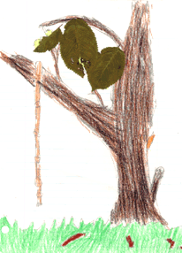

Student Project
Joe

My tree is an elm tree. It is gray, black, brown, and Indian red. I have a rope on it that I climb and swing on. Its roots stick out of the ground. I feel like a small person next to my tree even though some branches are low. It is about 80 years old! The twigs look like cork screws and are slightly zig-zagged. The short stalked leaves are pointed at the tip and round at the base.
My elm has lived through horrible storms. It is a home to ants and squirrels.
-Joe
c.Joe
Grade 4
Thomas Jefferson Magnet School
Euclid, Ohio USA
Crayon and Real Leaves on Paper 9 "X12"
Elm
Latin Name:=TBA
Age: 80 years
Circumference at 54 inches from the Base: TBA
Location: Euclid, Ohio USA
 Return to Main Page
Return to Main Page
June Julian jj68@nyu.edu